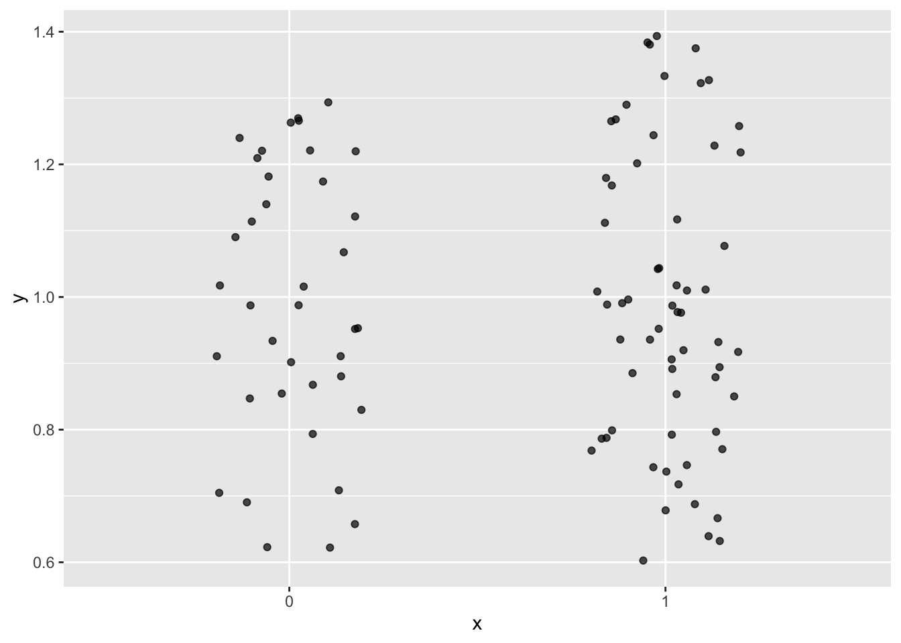

9 Logistische Regression
9.1 Lernsteuerung
9.1.1 Vorbereitung
Frischen Sie Ihr Wissen zur logistischen Regression auf bzw. machen Sie sich mit den Grundlagen des Verfahrens vertraut.
9.1.2 Lernziele
Sie verstehen den Zusammenhang von linearen und logistischen Modellen Sie können die logistische Regression mit Methoden von tidymodels anwenden
9.1.3 Literatur
Rhys, Kap. 4
9.1.4 Benötigte R-Pakete
easystats ist, wie Tidymodels und Tidyverse, ein Metapaket, ein R-Paket also, das mehrere Pakete verwaltet und startet. Hier findet sich mehr Info zu Easystats.
Einen flotten Spruch bekommen wir von Easystats gratis dazu:
easystats_zen()
## [1] "Patience you must have my young padawan."9.2 Intuitive Erklärung
Die logistische Reression ist ein Spezialfall des linearen Modells (lineare Regression), der für binäre (dichotom) AV eingesetzt wird (es gibt auch eine Variante für multinominale AV). Es können eine oder mehrere UV in eine logistische Regression einfließen, mit beliebigem Skalenniveau.
Beispiele für Forschungsfragen, die mit der logistischen Regression modelliert werden sind:
- Welche Faktoren sind prädiktiv, um vorherzusagen, ob jemand einen Kredit zurückzahlen kann oder nicht?
- Haben weibliche Passagiere aus der 1. Klasse eine höhere Überlebenschance als andere Personen auf der Titanic?
- Welche Faktoren hängen damit zusammen, ob ein Kunde eine Webseite verlässt, bevor er einen Kauf abschließt?
Der Name stammt von der logistischen Funktion, die man in der einfachsten Form so darstellen kann:
\[f(x) = \frac{x}{1+e^{-x}}\]
Da die AV als dichotom modelliert wird, spricht man von einer Klassifikation.
Allerdings ist das Modell reichhaltiger als eine bloße Klassifikation, die (im binären Fall) nur 1 Bit Information liefert: “ja” vs. “nein” bzw. 0 vs. 1.
Das Modell liefert nämlich nicht nur eine Klassifikation zurück, sondern auch eine Indikation der Stärke (epistemologisch) der Klassenzugehörigkeit.
Einfach gesagt heißt das, dass die logistische Regression eine Wahrscheinlichkeit der Klassenzugehörigkeit zurückliefert.
flowchart LR Daten --> Modell --> Wskt --> Klasse
9.3 Profil
Das Profil des Modells kann man wie folgt charakterisieren, vgl. Tab. Tabelle 9.1.
| Merkmal | Logistische Regression |
|---|---|
| Klassifikation | ja |
| Regression | nein |
| Lerntyp | überwacht |
| parametrisch | ja |
9.4 Warum nicht die lineare Regression verwenden?
Forschungsfrage: Kann man anhand des Spritverbrauchs vorhersagen, ob ein Auto eine Automatik- bzw. ein manuelle Schaltung hat? Anders gesagt: Hängen Spritverbrauch und Getriebeart, s. Abbildung 9.2? (Datensatz mtcars)
\(Pr(\text{am}=1|m91,\text{mpg_z}=0) = 0.46\): Die Wahrscheinlichkeit einer manuelle Schaltung, gegeben einem durchschnittlichen Verbrauch (und dem Modell m81) liegt bei knapp 50%.
9.4.1 Lineare Modelle running wild
Wie groß ist die Wahrscheinlichkeit für eine manuelle Schaltung …
- … bei
mpg_z = -2?
predict(m81, newdata = data.frame(iv = -2))
## 1
## -0.1923719\(Pr(\hat{y})<0\) macht keinen Sinn. ⚡
- … bei
mpg_z = +2?
predict(m81, newdata = data.frame(iv = +2))
## 1
## 1.004872\(Pr(\hat{y})>1\) macht keinen Sinn. ⚡
Schauen Sie sich mal die Vorhersage an f√ºr mpg_z=5 ü§Ø
9.4.2 Wir müssen die Regressionsgerade umbiegen
… wenn der vorhergesagte Wert eine Wahrscheinlichkeit, \(p_i\), ist, s. Abbildung 9.3.
Die schwarze Gerade verlässt den Wertebereich der Wahrscheinlichkeit. Die blaue Kurve, \(\mathcal{f}\), bleibt im erlaubten Bereich, \(Pr(y) \in [0,1]\). Wir müssen also die linke oder die rechte Seite des linearen Modells transformieren: \(p_i = f(\alpha + \beta \cdot x)\) bzw.:
\(f(p) = \alpha + \beta \cdot x\)
\(\mathcal{f}\) nennt man eine Link-Funktion.
9.4.3 Verallgemeinerte lineare Modelle zur Rettung
Für metrische AV mit theoretisch unendlichen Grenzen des Wertebereichs haben wir bisher eine Normalverteilung verwendet:
\[y_i \sim \mathcal{N}(\mu_i, \sigma)\]
Dann ist die Normalverteilung eine voraussetzungsarme Wahl (maximiert die Entropie).
Aber wenn die AV binär ist bzw. Häufigkeiten modelliert, braucht man eine Variable die nur positive Werte zulässt.
Diese Verallgemeinerung des linearen Modells bezeichnet man als verallgemeinertes lineares Modell (generalized linear model, GLM).
Im Falle einer binären (bzw. dichotomen) AV liegt eine bestimmte Form des GLM vor, die man als logistische Regression bezeichnet.
9.5 Der Logit-Link
Der Logit-Link wird auch \(\mathcal{L}\), logit, Log-Odds oder Logit-Funktion genannt.
Er “biegt” die lineare Funktion in die richtige Form.
Der Logit-Link ordnet einen Parameter, der als Wahrscheinlichkeitsmasse definiert ist (und daher im Bereich von 0 bis 1 liegt), einem linearen Modell zu (das jeden beliebigen reellen Wert annehmen kann):
\[ \begin{align} \text{logit}(p_i) &= \alpha + \beta x_i \end{align} \]
- Die Logit-Funktion \(\mathcal{L}\) ist definiert als der (natürliche) Logarithmus des Verhältnisses der Wahrscheinlichkeit zu Gegenwahrscheinlichkeit:
\[\mathcal{L} = \text{log} \frac{p_i}{1-p_i}\]
Das Verhältnis der Wahrscheinlichkeit zu Gegenwahrscheinlichkeit nennt man auch Odds.
Also:
\[\mathcal{L} = \text{log} \frac{p_i}{1-p_i} = \alpha + \beta x_i\]
9.6 Aber warum?
Forschungsfrage: Hängt das Überleben (statistisch) auf der Titanic vom Geschlecht ab?
Wie war eigentlich insgesamt, also ohne auf einen (oder mehrere) Prädiktoren zu bedingen, die Überlebenswahrscheinlichkeit?
Die Wahrscheinlichkeit zu Überleben \(Pr(y=1)\) lag bei einem guten Drittel (0.38).
Das hätte man auch so ausrechnen:
Anders gesagt: \(p(y=1) = \frac{549}{549+342} \approx 0.38\)
9.6.1 tidymodels, m83
Berechnen wir jetzt ein lineares Modell für die AV Survived mit dem Geschlecht als Pädiktor:
Die Faktorstufen, genannt levels von Survived sind:
levels(d$dv)
## [1] "0" "1"Und zwar genau in dieser Reihenfolge.
9.7 lm83, glm
Die klassische Methoden in R, ein logistisches Modell zu berechnen, ist mit der Funktion glm(). Tidymodels greift intern auf diese Funktion zurück. Daher sind die Ergebnisse numerisch identisch.
- AV: Überleben (binär/Faktor)
- UV: Ticketpreis
Mit easystats kann man sich model_parameter() einfach ausgeben lassen:
Und auch visualisieren lassen:
plot(model_parameters(lm83))9.8 m83, tidymodels
Achtung! Bei tidymodels muss bei einer Klassifikation die AV vom Type factor sein. Außerdem wird bei tidymodels, im Gegensatz zu (g)lm nicht die zweite, sondern die erste als Ereignis modelliert wird.
Daher wechseln wir die referenzkategorie, wir “re-leveln”, mit relevel():
Check:
levels(d2$dv)
## [1] "1" "0"Passt.
Die erste Stufe ist jetzt 1, also Überleben.
Jetzt berechnen wir das Modell in gewohnter Weise mit tidymodels.
Hier sind die Koeffizienten, die kann man sich aus m83_fit herausziehen:
| term | estimate | std.error | statistic | p.value |
|---|---|---|---|---|
| (Intercept) | 2.68 | 0.26 | 10.46 | 0.00 |
| iv | −0.75 | 0.08 | −9.13 | 0.00 |
## [1] 2.6827432 -0.7479317Die Koeffizienten werden in Logits angegeben.
In Abbildung 9.4 ist das Modell und die Daten visualisiert.
Definieren wir als \(y=1\) das zu modellierende Ereignis, hier “Überleben auf der Titanic” (hat also überlebt).
Wie wir oben schon gesehen haben, funktioniert die lineare Regression nicht einwandfrei bei binären (oder dichotomen) AV.
9.8.1 Wahrscheinlichkeit in Odds
Probieren wir Folgendes: Rechnen wir die Wahrscheinlichkeit zu Überlegen für \(y\), kurz \(p\), in Odds (Chancen) um.
\(odds = \frac{p}{1-p}\)
In R:
odds <- 0.38 / 0.62
odds
## [1] 0.6129032Bildlich gesprochen sagen die Odds: für 38 Menschen, die überlebt haben, kommen (ca.) 62 Menschen, die nicht überlebt haben, s. Abbildung 9.5.

Plotten wir die Odds als Funktion der UV, s. Abbildung 9.6.
Wir sind noch nicht am Ziel; die Variable ist noch nicht “richtig gebogen”.
9.8.2 Von Odds zu Log-Odds
Wenn wir jetzt den Logarithmus (der Odds) berechnen bekommen wir eine “brav gebogenen” Funktion, die Log-Odds, \(\mathcal{L}\), als Funktion der UV, s. Abbildung 9.7.
\[\mathcal{L} = log (odds) = log \left(\frac{p}{1-p}\right)\]
Linear!
Es gilt also:
\[\text {log-odds} = b_0 + b_1x\]
Log-Odds (Log-Odds) bezeichnet man auch als Logits.
9.9 Inverser Logit
Um nach \(p\) aufzulösen, müssen wir einige Algebra bemühen:
\[ \begin{align} \text{log} \frac{p}{1-p} &= \alpha + \beta x & & \text{Exponentieren}\\ \frac{p}{1-p} &= e^{\alpha + \beta x} \\ p_i &= e^{\alpha + \beta x_i} (1-p) & & \text{Zur Vereinfachung: } x := e^{\alpha + \beta x_i} \\ p_i &= x (1-p) \\ &= x - xp \\ p + px &= x \\ p(1+x) &= x \\ p &= \frac{x} {1+x} & & \text{Lösen wir x wieder auf.} \\ p &= \frac{e^{\alpha + \beta x_i}}{1 + e^{\alpha + \beta x_i}} = \mathcal{L}^{-1} \end{align} \]
Diese Funktion nennt man auch inverser Logit, \(\text{logit}^{-1}, \mathcal{L}^{-1}\).
Zum Gl√ºck macht das alles die Rechenmaschine f√ºr uns üòÑ.
9.9.1 Vom Logit zur Klasse
Praktisch können wir uns die Logits und ihre zugehörige Wahrscheinlichkeit einfach ausgeben lassen mit R. Und die vorhergesagte Klasse (.pred_class) auch:
9.9.2 Grenzwert wechseln
Im Standard wird 50% als Grenzwert für die vorhergesagte Klasse \(c\) genommen:
- wenn \(p <= .5 \rightarrow c = 0\)
- wenn \(p > .5 \rightarrow c = 1\)
Man kann aber den Grenzwert beliebig wählen, um Kosten-Nutzen-Abwägungen zu optimieren; mehr dazu findet sich z.B. hier.
9.10 Logit und Inverser Logit
9.10.1 Logit
\((0,1) \rightarrow (-\infty, +\infty)\)
Abbildung 9.8 zeigt die Veränderung des Wertebereichs bei Umrechnung von Wahrscheinlichkeit zu Logit.
Praktisch, um Wahrscheinlichkeit zu modellieren.
\[p \rightarrow \fbox{logit} \rightarrow \alpha + \beta x\]
9.10.2 Inv-Logit
Beim Inversen Logit (Inv-Logit) ist es genau umgekehrt wie beim Logit. Abbildung 9.9 zeigt die Veränderung des Wertebereichs des Inv-Logits.
\((-\infty, +\infty) \rightarrow (0,1)\)
Praktisch, um in Wahrscheinlichkeiten umzurechnen.
\[p \leftarrow \fbox{inv-logit} \leftarrow \alpha + \beta x\]
9.11 Logistische Regression im Überblick
Eine Regression mit binomial verteilter AV und Logit-Link nennt man logistische Regression.
-
Man verwendet die logistische Regression um binomial verteilte AV zu modellieren, z.B.
- Wie hoch ist die Wahrscheinlichkeit, dass ein Kunde das Produkt kauft?
- Wie hoch ist die Wahrscheinlichkeit, dass ein Mitarbeiter kündigt?
- Wie hoch ist die Wahrscheinlichkeit, die Klausur zu bestehen?
Die logistische Regression ist eine normale, lineare Regression für den Logit von \(Pr(y=1)\), wobei \(y\) (AV) binomialvereteilt mit \(n=1\) angenommen wird:
\[ \begin{align} y_i &\sim \mathcal{B}(1, p_i) \\ \text{logit}(p_i) &= \alpha + \beta x_i \end{align} \]
Da es sich um eine normale, lineare Regression handelt, sind alle bekannten Methoden und Techniken der linearen Regression zulässig.
Da Logits nicht einfach zu interpretieren sind, rechnet man nach der Berechnung des Modells den Logit häufig in Wahrscheinlichkeiten um.
9.11.1 Die Koeffizienten sind schwer zu interpretieren
Puhhh, s. Abbildung 9.10
- In der logistischen Regression gilt nicht mehr, dass eine konstante Veränderung in der UV mit einer konstanten Veränderung in der AV einhergeht.
- Stattdessen geht eine konstante Veränderung in der UV mit einer konstanten Veränderung im Logit der AV einher.
- Beim logistischen Modell hier gilt, dass in der Nähe von \(x=0\) die größte Veränderung in \(p\) von statten geht; je weiter weg von \(x=0\), desto geringer ist die Veränderung in \(p\).
9.11.2 Logits vs. Wahrscheinlichkeiten
?(caption)
| logit | p |
|---|---|
| −10.00 | 0.00 |
| −3.00 | 0.05 |
| −2.00 | 0.12 |
| −1.00 | 0.27 |
| −0.50 | 0.38 |
| −0.25 | 0.44 |
| 0.00 | 0.50 |
| 0.25 | 0.56 |
| 0.50 | 0.62 |
| 1.00 | 0.73 |
| 2.00 | 0.88 |
| 3.00 | 0.95 |
| 10.00 | 1.00 |